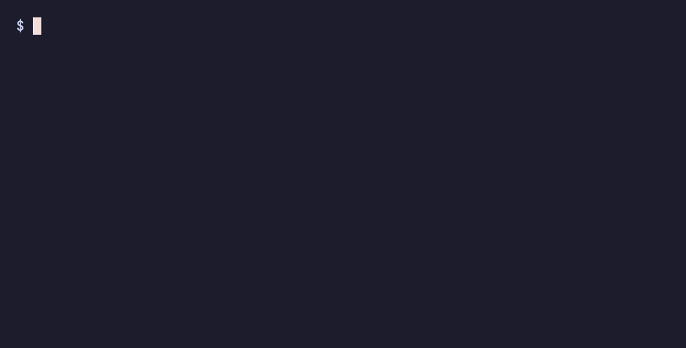

A fast, single-binary markdown to HTML converter that produces complete,
self-contained styled pages — syntax highlighting and theme CSS included, with
no runtime to install. Core conversion works fully offline (the optional
--mermaid and --math features load a CDN).

mkdown input.md # Converts to input.html
mkdown doc.md -o out.html # Custom output
mkdown *.md # Batch: every file, converted in parallel
mkdown *.md --no-highlight # Skip highlighting for maximum throughput
.html filemkdown *.md converts a whole directory in one
process across all available cores (see Performance)--no-highlight to skip it)# Homebrew (macOS / Linux)
brew install ekinertac/tap/mkdown
# npx — no install, no Go toolchain (great for Node/docs projects)
npx @mkdown/cli input.md
# Go toolchain
go install github.com/ekinertac/mkdown/cmd/mkdown@latest
Prebuilt binaries for macOS, Linux, and Windows (amd64/arm64) are attached to each GitHub Release.
Or build from source:
git clone https://github.com/ekinertac/mkdown.git
cd mkdown
go build
# Run tests
make test
# Or with coverage
make test-coverage
Convert a markdown file to HTML:
mkdown input.md
This creates input.html in the same directory.
Pass multiple files (a glob works) and mkdown converts them concurrently in a single process, sized to the available CPU budget:
mkdown *.md # Convert every .md in the directory
mkdown docs/**/*.md # With shell globstar enabled
Each file is written next to its source (foo.md → foo.html). Because it
runs as one process across a worker pool, batch conversion avoids the per-file
startup cost a shell loop (for f in *.md; ...) would pay. -o is only valid
with a single input.
Serve a file and edit it with your browser auto-refreshing on every save:
mkdown serve readme.md
This starts a local server (a free port on 127.0.0.1), opens your browser, and
re-renders on each save — the tab reloads itself. Ctrl+C stops it. The render
flags (--theme, --mermaid, --math, --no-highlight) apply.
A version-history sidebar on the right records every save in the session. Click any earlier entry to view that snapshot in place, or Back to Live to resume following your edits.
mkdown <input.md>... [flags]
Flags:
-o, --output <path> Output file path (single input only; default: input name with .html)
-t, --theme <name> Theme to use: dark (default), light
--mermaid Enable Mermaid diagram support (requires internet)
--math Enable math rendering with KaTeX (requires internet)
--no-highlight Skip syntax highlighting (faster; code renders as plain <pre><code>)
--watch Re-render the file on every change (single file; Ctrl+C to stop)
-v, --version Show version number
-h, --help Show help message
Examples:
mkdown README.md # Creates README.html (dark theme)
mkdown doc.md -o output.html # Custom output path
mkdown doc.md -o dist/output.html # Creates dist/ directory if needed
mkdown doc.md --theme light # Use light theme
mkdown *.md # Batch convert, in parallel
mkdown *.md --no-highlight # Batch, max throughput
mkdown --watch README.md # re-render on save until Ctrl+C
mkdown diagram.md --mermaid # Enable Mermaid diagrams
mkdown math.md --math # Enable math rendering
mkdown doc.md --mermaid --math --theme light # All features
Config file support (via ~/.mkdown.yml) is planned for future releases. This will allow:
mkdown is built to turn a pile of markdown into a pile of finished, styled,
highlighted HTML pages, fast. Unlike bare CommonMark parsers it emits a
complete standalone document (theme CSS inline, syntax highlighting applied),
and unlike pandoc it carries no runtime and parallelizes batches itself.
Numbers below are from hyperfine (warmup runs, mean of many) on a 10-core
machine. “Full doc + HL” means a complete standalone HTML page with syntax
highlighting; “fragment” means a bare HTML snippet with no document wrapper,
CSS, or highlighting.
Single realistic file (~10 KB):
| Tool | Time | Output |
|---|---|---|
| mkdown | 9 ms | full doc + HL |
| pandoc | 53 ms | full doc + HL |
| markdown-it / python-markdown | ~52 ms | fragment |
| cmark-gfm (C) / comrak (Rust) | 2–6 ms | fragment |
mkdown produces a finished, styled page faster than the runtime-based tools emit even a bare fragment. The C/Rust engines are faster at raw parsing, but they output fragments — adding highlighting and a document wrapper to match mkdown’s output erases the gap.
Batch — 200 realistic files (mkdown’s native pool vs others under xargs -P):
| Tool | Time | vs mkdown |
|---|---|---|
| mkdown (full doc + HL) | 36 ms | — |
| mkdown –no-highlight | 22 ms | — |
| cmark-gfm, parallel (fragment) | 239 ms | 6.7× slower |
| pandoc, parallel (full doc + HL) | 1.8 s | 50× slower |
The batch win comes from running one process for all files (no per-file startup) on top of in-process parallelism.
Constrained environments. The pool sizes itself to GOMAXPROCS, so it
respects container CPU quotas (CI runners, Kubernetes limits) instead of
oversubscribing host cores. On a single core mkdown loses the parallel speedup
but keeps the structural lead — a 200-file batch still finishes in ~100 ms,
ahead of every alternative. --no-highlight helps most here, since
highlighting is the bulk of per-file CPU.
Add metadata to your markdown files:
---
title: My Document
author: John Doe
---
# Content starts here
The title field will be used as the HTML page title.
~~text~~- [ ] and - [x][^1] reference style footnotesSee examples/extensions.md for usage examples.
--mermaid flag)
--math flag)
See examples/mermaid-demo.md and examples/math-demo.md for examples.
See examples/ directory for sample markdown files:
showcase.md - Complete feature demonstration (all phases)extensions.md - Phase 1 features (footnotes, definition lists, etc.)mermaid-demo.md - Mermaid diagram examplesmath-demo.md - Math equation examplescombined-demo.md - Mermaid + Math togethersample.md - Basic markdown featuresQuick start:
mkdown examples/showcase.md --mermaid --math
open examples/showcase.html
mkdown uses a clean architecture with separated CSS:
internal/templates/default.html (minimal HTML structure)internal/templates/dark.css (default, GitHub dark palette)internal/templates/light.css (GitHub light palette)# Dark theme (default)
mkdown input.md
# Light theme
mkdown input.md --theme light
# Short flag
mkdown input.md -t light
Both themes include:
Planned features:
~/.mkdown.ymlSee PROJECT_STRUCTURE.md for detailed folder organization and architecture.
MIT